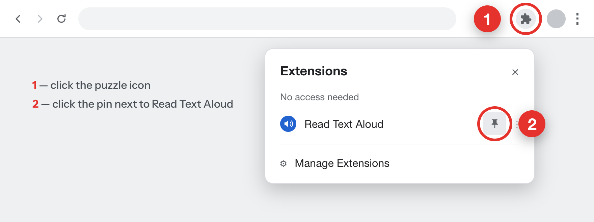
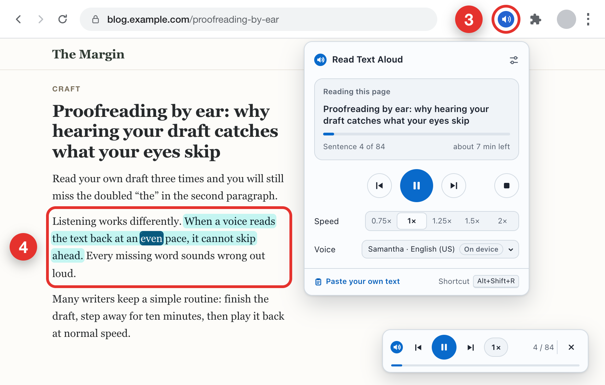

Chrome hides new extensions behind the puzzle icon. Pin Read Text Aloud first — it takes two clicks.

Click the pinned icon 3 on an article, a blog post or a wiki page. Reading starts at once, and the sentence being read is highlighted 4. The small player in the bottom-right corner lets you pause, skip a sentence or stop.

Try it now: click the icon, and Read Text Aloud will read this page to you.
To read only part of a page, select it, right-click and choose Read selection aloud.
Shortcut: Alt+Shift+R starts, pauses and resumes reading (Option+Shift+R on a Mac).